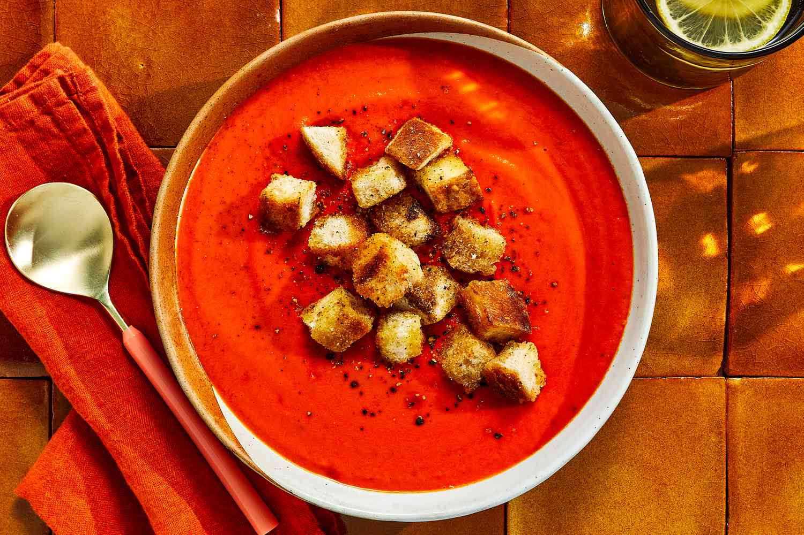

Return to Homepage
SOUP!!!!

Tomato Soup
The incredible contagious tomato soup is known for its tradional abilities to tend to
the sick. During times of refuge--particularly septmember--the flue typically has spread its
wings infecting everything in its path. This occassionally leads to stomach aches including
a broad variety of other unwelcome symptoms. Well soup is the perfect solution because it is
convienent as well as effective at helping those whose stomachs are turned upsidedown. Below there
are a few ingredients to begin crafting the perfect tomato soup by natashaskitchen.
The soup recipe is found below:
Author: Natasha Kravchuk
- Butter: use unstalted butter to sautee onions.
- Yellow onion: it seems like a ton of onion but it dissapears into the soup adding a balanced sweetness
- Garlic: you'll need 1 Tbsp minced from about 3 cloves
- Crushed tomatoes: with their juice, preferably San Marzano tomatoes
- Chicken stock: for the best flavor use homemade chicken broth
- Basil: chop and add 1/4 cup fresh basil, plus more to serve. Basil leaves are easily bruised so chop by stacking a bunch of leaves then roll them into a log and cut into thin strips.
- Sugar: It's just 1 Tbsp, but necessary to combat the tomato acidity.
- Black pepper: start with 1/2 tsp and add more to taste
- Whipping cream: adds a creaminess to the soup and offsets acidity.
- Parmesan cheese: adds saltiness to the soup and balances acidity. Adding parmesan adds enough salt and I usually don't add more.
Steps to prepare:
- Saute Aromatics - heat a non-reactive pot over medium heat. Melt in 4 Tbsp butter then sautee onions until softened and golden (10-12 min). Add minced garlic and saute another minute.
- Make the tomato soup base - stir in two 28 oz cans of crushed tomatoes with their juice, your chicken stock, chopped basil, sugar and black pepper. Bring to a boil then reduce heat, partially cover and simmer 10 minutes.
- Blend if desired - use an immersion blender in the pot or blend in batches using a blender (be careful not to overfill the blender with hot liquid) and return soup to the pot.
- Add cream and parmesan - stir in the heavy cream and shredded parmesan. Return to a simmer and season to taste if needed.
- Serve - ladle into warm bowls and garnish with more parmesan and basil.